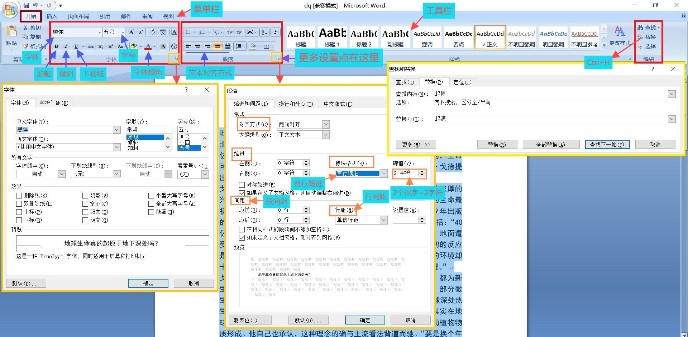
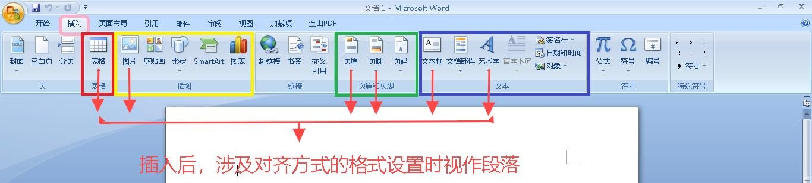
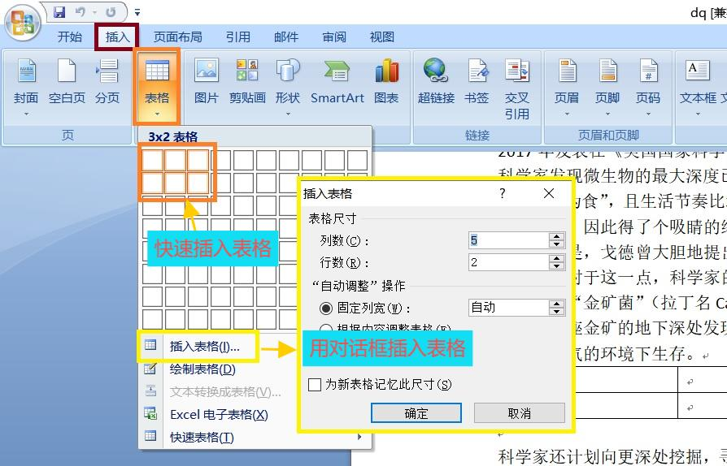
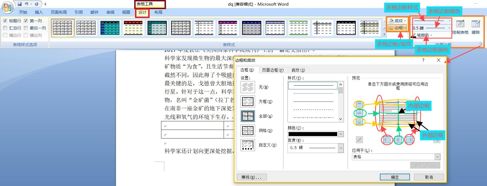
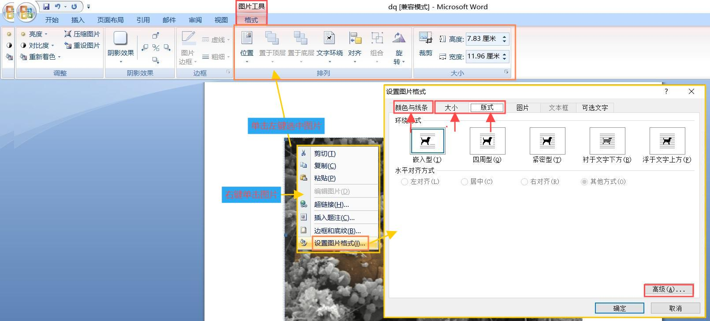
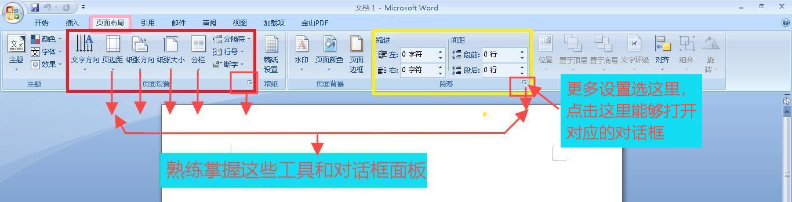
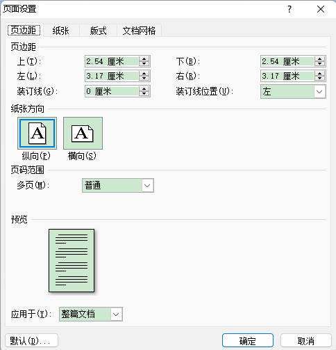
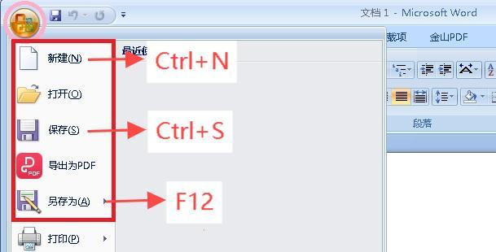

Word考查项目 |
| 一、开始菜单 |
|  |
| 1、字体设置包括： |
字体、字形、字号、颜色 |
| 设置文字格式操作步骤：选中要设置的文字—>“开始”—>字体部分工具按钮 |
| 2、段落格式设置 |
| 对齐方式（左对齐、居中对齐、右对齐、两端对齐、分散对齐） |
| 缩进（左缩进、右缩进） |
| 特殊格式（首行缩进、悬挂缩进） |
| 间距（段前、段后），注意：题干中一般描述为段前间距、段后间距 |
| 行距（单倍行距/1.5倍行距/2倍行距/最小值/固定值（单位为磅）/多倍行距），注意：题干中一般描述为行间距 |
| 设置段落格式操作步骤：选中要设置的段落—>“开始”—>段落部分工具按钮 |
| 3、查找、替换 |
| 替换操作步骤：选中要设置的段落—>“开始”—>编辑工具里的“替换按钮”（或者Ctrl+H) |
| 二、插入菜单 |
|  |
| 1、插入表格 |
| 步骤：1）定位表格插入位置 2）插入—>表格 |
|  |
| 表格设置：包括对齐方式、边框、底纹 |
| 操作步骤：插入表格后单击表格任意位置，即可在显示的“表格工具”菜单里对表格进行设置。如下图所示： |
|  |
| 2、插入图片（文本框、艺术字等对象的插入与设置方法同图片类似) |
| 步骤：1）定位图片插入位置 2）插入—>图片（注意：考试时按照下面路径找要插入的图片：网络磁盘—>考号命名的文件夹—>WORD） |
| 图片格式设置：单击选中已经插入的图片—>图片工具/格式（或者右键单击图片—>选择快捷菜单：设置图片格式（I）……） |
|  |
| 注意：设置图片格式时涉及版式、大小的同时还要求设置颜色与线条需要进行图片格式设置两次，大小设置注意锁定纵横比。 |
| 3、插入页眉、页脚、页码 |
步骤：插入—>页眉/页脚/页码 |
| 插入页眉或页脚后，需要修改时，双击页眉或页脚的位置即可。 |
| 三、页面布局 |
|  |
| 1、页边距（左边距、右边距、上边距、下边距） |
| 2、纸张大小 |
 |
| 3、分栏 |
| 步骤：选中要分栏的文字，页面布局—>分栏 |
| 四、Office按钮 |
 |
| 1、新建文档操作步骤：Office按钮—>新建 |
| 2、保存文档操作步骤：Office按钮—>保存 |
| 3、另存文档操作步骤：Office按钮—>另存为 |
| 注意：对于新建文档第一次保存时会弹出对话框要求用户输入保存的位置和名称，以后保存就不会再有对话框。 |